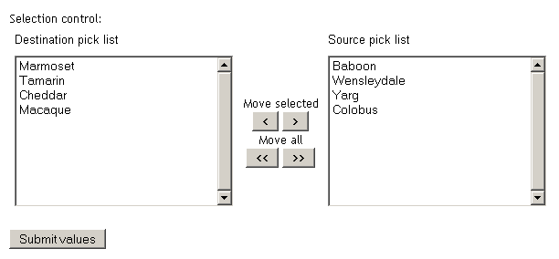
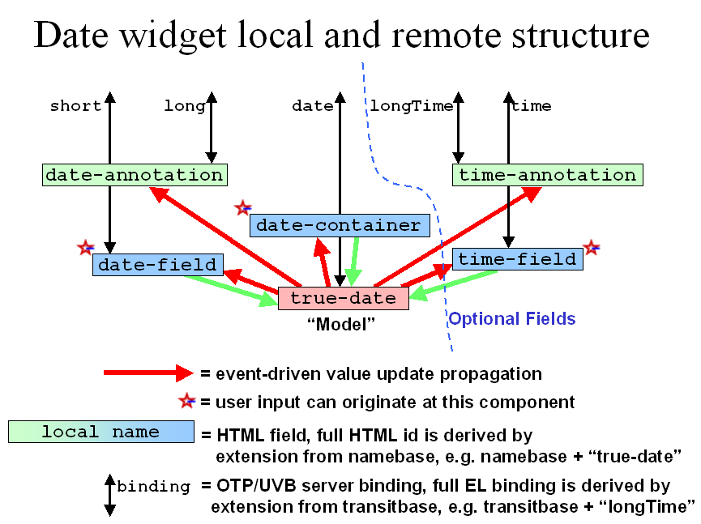
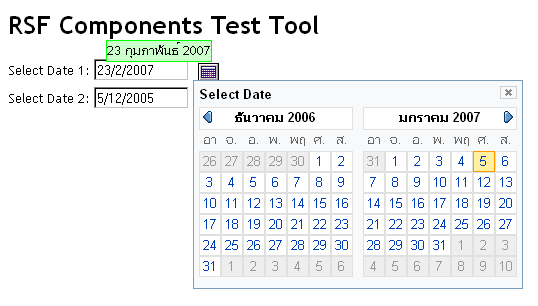

NB - a PowerPoint presentation covering much of the material on this page is available on the Presentations page.
covering much of the material on this page is available on the Presentations page.
The term "component" is somewhat overloaded within RSF, not so say within computing in general. This page is about how to create reusable segments of markup which function as a placeable UI "component" or "widget" in RSF.
If you are already familiar with writing plain ViewProducers in RSF, the basic organisation where the markup for a UI is separated into a plain XHTML file, but the behaviour and bindings are written in a pure Java ComponentProducer, will be very familiar - reusable RSF components are written in just the same way. In order to be reusable, we want to centralise the templates and code for our components in one place, possibly outside our app. The key idea behind using a component is to encourage the RSF renderer to take a branch from the markup file holding your main view template, into the markup file for the component. This is done by creating a branch component in the component tree for your view.
Evolvers and Producers#
The page on ComponentProducers explains the general contract of an RSF Producer - it implements a one-line interface of some kind, for which the first argument is typically UIContainer tofill, representing the client's container in the tree which is being populated.
Evolvers #
When creating reusable UI components, a particular kind of signature becomes fairly popular, where the next argument is an already existing concrete RSF component. This kind of signature is called an evolver, since it can be seen as "evolving" the concrete component into a more elaborated form.For example, the standard RSF evolver interface TextInputEvolver is as follows:
public interface TextInputEvolver {
public UIJointContainer evolveTextInput(UIInput toevolve);
}
This is the interface to a family of components which perform the function of inputting text. The reason for casting the interface this way, is that UIInput already compactly summarises all of the configuration that might be required for such a component - it specifies the EL binding, the ID, parent and any initial value for the component, as well as coming with a complete array of constructors. In this role, the UIInput is called a seed component. By reusing the existing UIInput class for this purpose, we can economise completely on constructors and configuration in our interface - we can even do away with the usually necessary UIContainer tofill argument, since in this case the required parent can be inferred from the existing parent of the seed.
Other standard RSF evolvers are SelectEvolver
public interface SelectEvolver {
public UIJointContainer evolveSelect(UISelect toevolve);
}
and DateInputEvolver
public interface DateInputEvolver {
public UIJointContainer evolveDateInput(UIInput toevolve, Date value);
}
Producers#
Not all "widgets" need be given an evolver signature - the signature is really entirely up to you as the designer of your widget family. For example a very popular choice, which involves no real coupling between the client and implementor of the widget, is to use the framework standard "BasicProducer" interface:
public interface BasicProducer {
public void fillComponents(UIContainer parent, String clientID);
}
This signature indicates that "some kind of component" will be created by the implementor when invoked (the most common convention is for the clientID supplied to be used as the clientID of a UIJointContainer) but does not expose any information about what kind.
Choose an evolver or producer signature as appropriate for your situation, reflecting the sort of information you desire to expose in the contract between the user and implementor of your widget.
Writing a simple Evolver#
The most basic skeleton of evolver tasks can be seen in the simplest evolver in RSF, PlainTextInputEvolver, which does essentially nothing - it evolves its seed UIInput component into an unchanged form. This is a great opportunity to see the basic evolver packaging at work.
public class PlainTextInputEvolver implements TextInputEvolver {
public static final String COMPONENT_ID = "plainTextEditor:";
public UIJointContainer evolveTextInput(UIInput toevolve) {
UIJointContainer joint = new UIJointContainer(toevolve.parent, toevolve.ID, COMPONENT_ID);
toevolve.parent.remove(toevolve);
toevolve.ID = SEED_ID;
joint.addComponent(toevolve);
return joint;
}
}
The first few lines of an evolver always follow the same pattern:
- Construct a UIJointContainer
- Remove the seed component from its old parent
- Mutate the ID of the seed component to the required standard name (assuming it still appears in bare form in the new branch)
- Add the seed back into the new branch
For more complex evolvers (e.g. a broken-up or field-based date input) the seed component may be used in a more complex fashion (e.g. steps 3 and 4 will not occur directly). For yet more complex "evolvers" there may even be no suitable seed component, and so the basic operation skeleton is just reduced to step 1, of constructing the JointContainer.
Let's look at this line-by-line in a little more detail:
public static final String COMPONENT_ID = "plainTextEditor:";Very similar to the static VIEW_ID field which often appears as the first line of a ViewProducer, this is a helpful convention to document the target rsf:id that this evolver will expect in its implementation template. This is a less useful convention than VIEW_ID since it is extremely rare to refer to an evolver implementation class directly - they are typically dynamically injected using Spring/RSAC.
UIJointContainer joint = new UIJointContainer(toevolve.parent,
toevolve.ID, COMPONENT_ID);
We infer the correct target location of the subtree we generate from our seed component. The seed component has already been placed in the correct location in the tree structure by the "constructor" - what needs to be changed is replacing it in its position and name with a UIJointContainer, with the subtree placed inside the container. Therefore the parent and client ID of the JointContainer are the parent and ID of the seed, and the target ID is our own.
toevolve.parent.remove(toevolve);
toevolve.ID = SEED_ID;
joint.addComponent(toevolve);
The seed is then removed from its old position in the tree, has its ID replaced with the "standard" seed ID for components of this class, which is defined in the TextInputEvolver to be "input":
public interface TextInputEvolver {
/** The standard ID of the "seed" component when positioned within the
* branch created by the evolver.
*/
public String SEED_ID = "input";
Finally, we return the joint we created as a courtesy. It is actually quite unlikely the client will make use of it, since the contents of the branch will in general be unknown - in general the client will not know which Evolver implementation has been injected.
return joint;
The implementation template#
Note that although implementation apparently does nothing very useful to the tree, it *will* in fact force a branch to the implementation template from which markup will be read. In this case the implementation template, plainTextEditor.html contains the following tags:
<div rsf:id="plainTextEditor:"> <textarea class="block" rsf:id="input" id="input" cols="65" rows="10" wrap="virtual"></textarea> </div>
(Note that the id on the div agrees with the COMPONENT_ID field issued as the joint ID).
Therefore the above implementation, just with a change of target ID, could be used to provide a "styled" text component, perhaps surrounded by a border or other markup, by including it in a different template surrounding the textarea. One could even achieve the same effect by overriding the standard RSF template contributor for its built-in components to supply a different template containing plainTextEditor:, although this is not really advisable --- although apparently useless the plainTextEvolver fills a very useful function of being an entirely unstyled "null" implementation of an evolver where this is required.
Registering your template#
As of RSF 0.7.2, template that are the target of branches (like plainTextEditor.html above) must still be registered into RSF resolution individually - in 0.8 we will be able to adopt a convention-based approach to speed this up. The current form of definition uses the standard parent definition templateContributorParent, for example like this:
<bean parent="templateContributorParent">
<property name="templateResourceBase" ref="componentsTemplateResourceBase"/>
<property name="templateNames"
value="plainTextEditor, double-list-select" />
</bean>
This definition registers two templates which are expected to be [res-base]/[base-dir]/plainTextEditor.html and [res-base]/[base-dir]/double-list-select.html. This path is built up hierarchically with two main parameters, [res-base] which is the templateResourceBase property, which typically defaults to the path / indicating that the templates are hosted from the current webapp, and [base-dir] the baseDirectory property, which defaults to content/templates.
The two default values are set from the application scope beans componentsTemplateResourceBase (default /) and defaultTemplatePath (default content/templates).
Using the Evolver#
Here is a standard set of two lines in the client which make use of the evolver:
UIInput text = UIInput.make(cform, "rich-text:", "#{dataBean.text}");
textevolver.evolveTextInput(text);
Note that although the construction of the seed component is performed almost exactly as if the component is to be used directly, there is the slight change that the component MUST be given a colon id, reflecting the fact that in the final tree, this ID will be placed on the UIJointContainer holding the implementation subtree. This would ordinarily be illegal, unless the leaf component text were forming a repetitive leaf.
Talking to the Client#
The plainTextEvolver did virtually nothing other than the basic mechanics of forcing a branch to a different implementation template. More sophisticated and useful components will generally require much more, and usually involve no inconsiderable amount of Javascript. It is time to consider the various strategies and implementations RSF puts in place to help component writers put together reusable markup *together* with safely packaged client-side logic.
We'll illustrate this section with the standard RSF evolver StandardDoubleSelectEvolver .
This operates a "double selection" control where the user assembles a selection list by moving items between two side-by-side lists. Here is a screenshot:
.
This operates a "double selection" control where the user assembles a selection list by moving items between two side-by-side lists. Here is a screenshot:

This component implements the Evolver interface SelectEvolver:
public interface SelectEvolver {
public UIJointContainer evolveSelect(UISelect toevolve);
}
Just as text controls are indistinguishable in their binding behaviour to UIInput, this selection control is indistinguishable in binding to UISelect.
Using Javascript I: Namebase and IDs#
The key ability in communicating from server to client is informing the client Javascript code where all of the related subcomponents are which form part of this component "instance". RSF helps with this by associating a well-defined XML id with each tag that it renders, which can be always determined in advance on the server-side. This id is the full ID for the component, which is constructed from colon-separated path segments taken from the BranchContainer structure. You can access this id on the server-side by calling the getFullID method on your component, once it has been attached to the correct point in the component tree.
Note that by default, RSF will only write the associated full ID onto a tag that it renders, if the tag already has an id attached to it on the template. This is to avoid bulking out the rendered markup unnecessarily, and corresponds well with the "full previewability" philosophy for RSF components.
For example, the double selection evolver emits a component for the "move left" button as follows:
UIOutput.make(togo, "move-left");
This peers with a template tag that looks like this:
<input type="button" id="input-doublelist:move-left"
rsf:id="move-left" title="Move selected" value="<"></input>
(Note that we render this button with a UIOutput since we are uninterested in rendering any part of its function - we are only rendering a component at all in order to have its id assigned correctly).
Imagine this component were rendered by a client with the following lines:
UISelect select = UISelect.makeMultiple(cform, "select:",
new String[] {"Baboon", "Marmoset", "Wensleydale",
"Tamarin", "Cheddar", "Yarg", "Macaque", "Colobus"},
"#{dataBean.selections}",
new String[] {"Marmoset", "Tamarin", "Cheddar", "Macaque"});
selectevolver.evolveSelect(select);
This would create the branch (the UIJointContainer as we saw above) for the selection control with the client ID of select:. Therefore when the "move left" button above is rendered, it will be rendered with a full XML ID of select::move-left. All of the other controls in our evolver will similarly share the prefix select:: in this rendered instance - select:: is called the namebase for this instance of the widget. A traditional problem for Javascript code in cooperating with server implementations is in locating all the tags that correspond to the different parts of a dynamically renderered control. In RSF these are easily located by appending their "local" names (agreed with the renderer implementation) to the namebase value. The only remaining issue is how to get the namebase to the client.
Using Javascript II: Init Blocks (formerly "RSJCIS")#
A component "instance" on a page typically needs to be contextualised from the server, with instance-specific information. The preferred RSF scheme for achieving this is to use an init block for which there is particular framework support from the UIInitBlock component - however any suitable strategy can be used if you wish.
Note on Javascript namespaces#
Together with the same considerations which discourage us from usage of <body onload>, the same considerations (portal aggregation, complex hosting situations) encourage us to be much more careful than is customary about avoiding name collisions in our Javascript code. Luckily, implementing the equivalent functionality to "namespaces" in other languages (C++, "packages" in Java, etc.) is very easy using Javascript's very powerful support for higher-order functions.Without worrying too much about the meaning of the syntax, the basic schematic for properly namespacing your Javascript functions and data looks as follows:
var myNamespace = function() {
// Any definitions placed here will be PRIVATE to your namespace
return {
myExportedFunction: function(arguments) {
// The implementation of a PUBLIC function, accessed externally
// as myNamespace.myExportedFunction()
}
}
}; // end return internal "Object"
}(); // end namespace myNamespace
Those who are interested in the meaning and reasoning behind this style can find a readable introduction and thread by Dustin Diaz, which has links to a more technical explanation from Douglas Crockford.
Using Javascript III: AJAX using transitbase and UVB#
The above techniques will cover all cases where the logic for the component's lifetime exists only on the client-side. Where the component needs to communicate to the server, typically via AJAX, it will need some further context. For this final, most complex type of component we will switch to studying the RSF internationalised date widget, with evolver FieldDateInputEvolver as our standard example.
In this case we are using the built-in RSF view for the Universal View Bus UVB - this is a standard view intended to be potentially suitable for all AJAX applications (of course, many established client-side libraries will already have defined their own AJAX protocols, and where these are XML-based, they may be easily rendered using simple RSF views and templates in the standard ViewProducer style).
The client needs some extra context in order to define which part of the application's data model it is intended to be working with. In the RSF model, in contrast to the vast majority of other frameworks, this context can operate without *any* server state being maintained in between requests. UVB is based on the OTP/BeanExploder concept whereby a bean definition or entity table is "exploded" into a freely addressed space of EL expressions, sharing a common base. For this particular widget, there genuinely is no state held on the server, and we are simply using the AJAX call as a strategy for performing the awkward Locale-aware parsing and rendering operations for the date. Therefore we use a BeanExploder definition of the following to create an infinite lazy space of date parsing machines, ready to do their work:
<bean id="fieldDateTransit" parent="beanExploder">
<property name="factory">
<bean class="uk.org.ponder.dateutil.StandardFieldDateTransit"
init-method="init">
<property name="locale" ref="requestLocale" />
<property name="timeZone" ref="requestTimeZone"/>
</bean>
</property>
</bean>
fieldDateTransit is a kind of "Swiss Army knife" of Locale-aware date conversion functions, packaged as a framework-free bean. Each widget instance is allocated to a separate instance with its own ID, for example the fieldDateTransit instance with ID 8ce08 would be addressed by the EL path fieldDateTransit.8ce08.
The point of this strategy is to ensure that each client-side instance of the widget has a separate set of server-side machinery allocated to it, and that requests issued over the UVB bus can be safely "bulked up" (coalesced) without the requests from different widgets conflicting. In even more advanced "components" there may even be some server-side state, hopefully mapped onto a database row, in which case the transit instance would have a physical meaning - however this would remain transparent to the client, which would just keep using the bindings it was given. In no case do we need to keep these addressed beans around in session state memory. Having sent the binding down to the client, the context can be cleared at the end of the request.
All of these considerations taken together produce the idea of the transitbase for a particular widget instance. This is the server-side counterpart of the namebase -- where the namebase is a namespace within the space of XML IDs that identifies the client-side components that the widget is dealing with, the transitbase identifies the base of a set of EL expressions on the server that the widget is allocated to. Therefore if sent a transitbase of fieldDateTransit.8ce08., the client would append the "well-known property names" to this to arrive at a path like fieldDateTransit.8ce08.short for reading/writing the short formatted version of the Date in the current Locale, or fieldDateTransit.8ce08.timeFormat for reading the localised version of the time format itself.
Putting it all together#
Assembling all of the required context for fieldDateInput leads to the following initialisation on the Java side:
UIInitBlock.make(togo, "init-date", JSInitName,
new Object[] {togo, title.get(), ttb, UVBProducer.PARAMS});
The corresponding tag in the markup is
<script rsf:id="init-date">
RSF_Calendar.initYahooCalendar_Datefield("nameBase1:", "Select Date");
</script>
Note that the preview initialisation has two fewer arguments than the version rendered by the server. The AJAX event cycle is one thing that cannot be fully previewed in the filesystem-only version, although in fact a few of the core validation functions are simulated in order to allow designers to preview and test all the visual transitions. The implementation of the init function detects whether 2 or 4 arguments are supplied and switches between dummy and live implementations of the AJAX loop.
Both of the namespaces we have talked about above can be seen in the following schematic of the local and remote structure of the fieldDateInput widget:

The fields shown in coloured rectangles correspond to local names in the HTML. These are the rsf:id values that are appended to the namebase sent as the first argument to the init function. The names shown in black next to the arrows at the top of the diagram correspond to the remote names as properties of the transit bean maintained on the server. These are appended to the transitbase value sent as the 3rd argument.
Here is the date widget in action - this implementation uses the Yahoo YUI calendar widget, in this view rendered in the Thai Locale:

[#1]Note that in more complex environments such as portlets, the correct viewStateHandler for issuing AJAX URLs may not be the standard one.
Add new attachment
Documentation
Developers
Javadocs
Designers
Sample RSF Apps
Presentations
Acronyms
Downloads
Current Release
Trunk
Distributions
Old Versions
Community
Q&A
Forums
Mailing Lists
Issue Tracker
People
Design
Roadmap
Integrations
Concepts
Philosophy